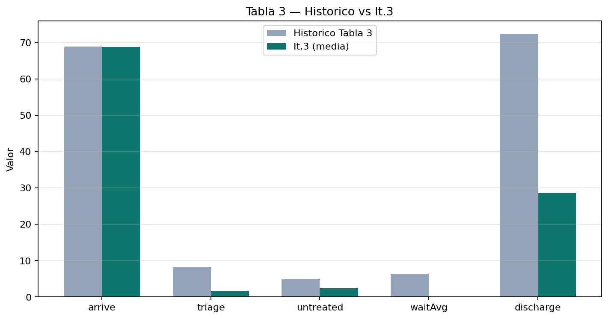
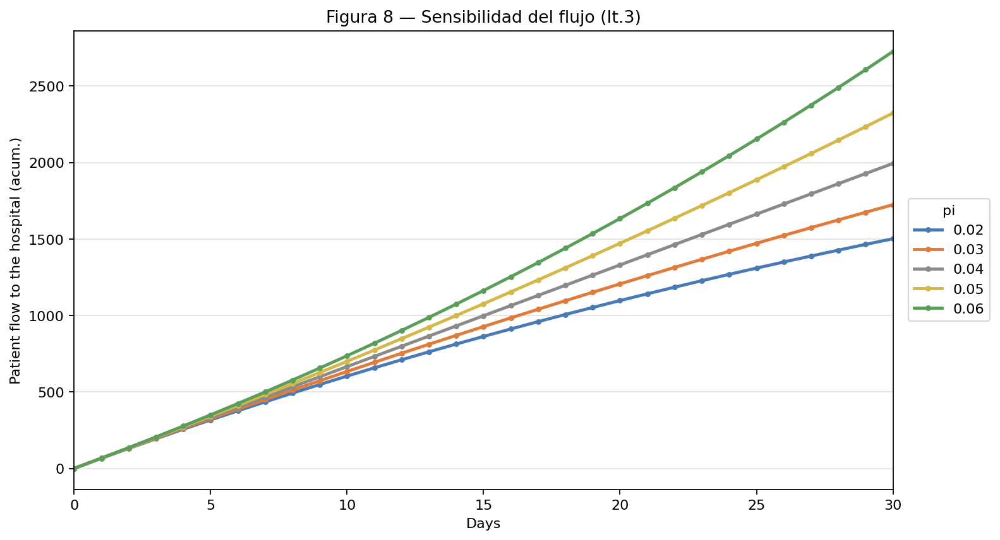
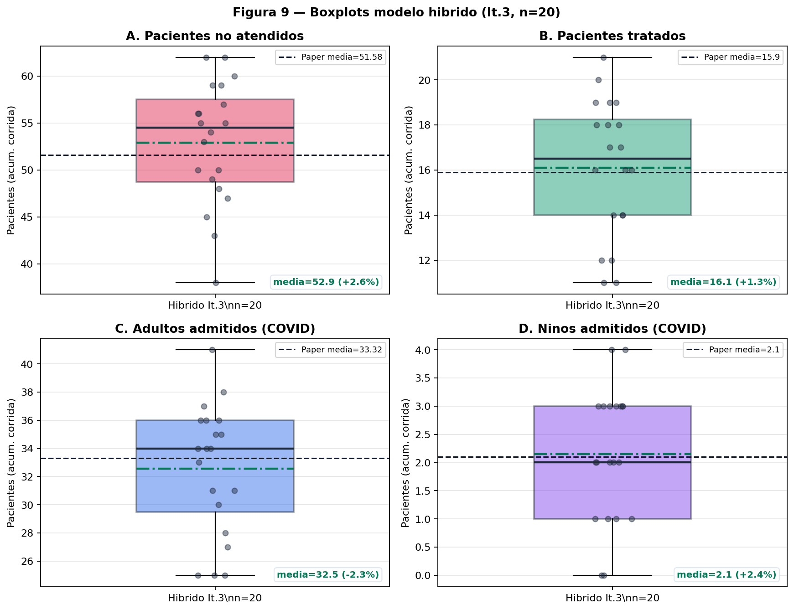
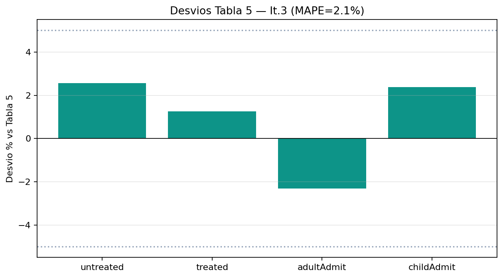
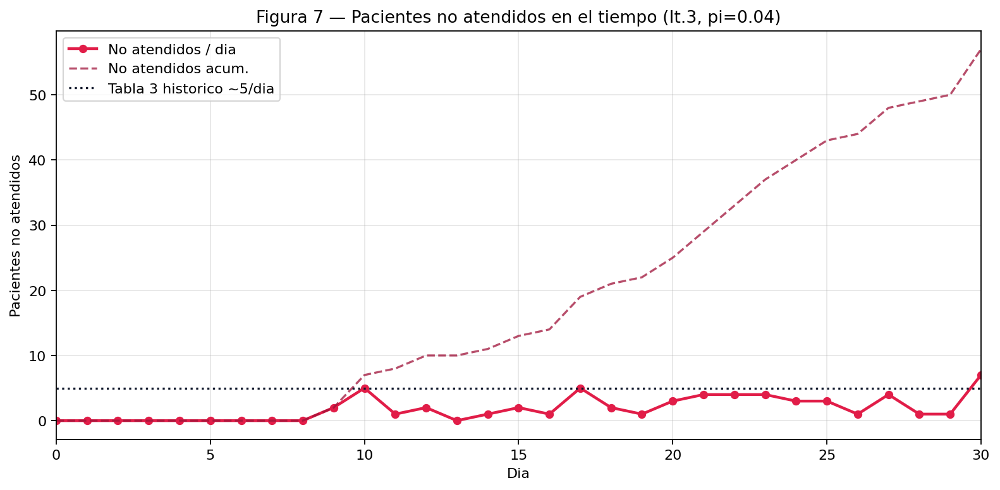

Simulación híbrida · DS + SED + MBA
Capacidad hospitalaria
en emergencias sanitarias
Réplica en AnyLogic del modelo híbrido de Meza-Palacios et al. Población Orizaba S+I = 123 182 · Validación It. 3: MAPE Tabla 5 ≈ 2,1 % (n = 20).
Cita APA 7.ª edición
Meza-Palacios, R., Aguilar-Lasserre, A. A., Moras-Sánchez, C. G., & Vázquez-Rodríguez, C. F. (2026). Development of a hybrid simulation model for hospital capacity in health emergencies. Journal of Simulation. https://doi.org/10.1080/17477778.2025.2610014
Equipo: Samuel Herrera · Katherinne Olaya · Fredy García · Ever Muñoz
AnyLogic 8.9.9 · Horizonte 30 d · Warm-up 8 d · 20 réplicas
Demanda pandémica vs capacidad hospitalaria limitada
Hospital en Orizaba (México): picos de COVID saturan camas, triage y personal; los no atendidos se redirigen a otros centros.
Problema real
- Reconversión hospitalaria bajo incertidumbre epidemiológica.
- 80 camas COVID; personal expuesto a contagio.
- Un solo paradigma no captura demanda + flujo + agentes.
Delimitación
- Foco: módulo COVID (híbrido propuesto), no hospital general completo.
- Horizonte: 30 días; KPIs días 8–30.
- Población DS: Orizaba 123 182 (S₀=121 460, I₀=1 722).
- Software: AnyLogic (DS + Process + Agents).
Pregunta de diseño
¿Cómo anticipar demanda infectada, operar triage/hospitalización y representar contagio del staff de forma acoplada y validable?
Tres escalas, un sistema de decisión
Macro · DS
Poblaciones agregadas S/I, prevalencia, fuerza de infección y flujo a hospital.
- Stocks: Susceptible, Infective, goToHospital
- Flujos: infection, hospitalFlow
- π ∈ [0,02 ; 0,06]
Meso · MBA
Personal con estados autónomos; la disponibilidad altera la capacidad del SED.
- 19 médicos; enfermeras y auxiliares análogos
- Susceptible → Infected → Hosp./Recovered
- Evento infección cada 6 h
Micro · SED
Colas, triage respiratorio, NEWS, estancias y egreso COVID.
- Delays triangulares (Tablas 1–2)
- 80 camas; ventiladores / prone
- Timeouts → otro hospital (untreated)
Históricos hospitalarios + fuentes epidemiológicas
Input Analysis
- Tiempos 2021 del hospital → triangulares (min, moda, máx).
- Pruebas de ajuste reportadas en el paper (χ², p > 0,05).
- Triage respiratorio: Triangular(5, 12, 25) min.
- Estancias COVID: Tablas 1–2 del artículo (días).
Fuentes
- Pérez-Tezoco et al. (2023): datos del hospital / modelo inicial.
- Secretaría de Economía (2024): población Orizaba/región.
- Secretaría de Salud (2024): hospitalización nacional 4–20 %.
- Tabla 3: llegadas COVID históricas 68,867 / día.
Diseño experimental y análisis de salida
Entrada · RNG · DoE
- Entrada: triangulares del paper + gate/split derivados de ratios Tabla 3↔5.
- RNG: semilla aleatoria por réplica (ExperimentoReplicas).
- Factores: π ∈ {0,02…0,06} (Fig. 8); base π = 0,04.
- Respuestas: untreated, treated, adultAdmit, childAdmit, flujo DS.
Salida (It. 3)
- n = 20 · media ± IC 95 % · MAPE vs Tabla 5.
- Criterio paper: |desvío| < 5 % en validación.
- Nuestra It. 3: MAPE ≈ 2,1 % en 4 KPIs híbridos.

Comunicación bidireccional en tiempo de ejecución
goToHospital
Source COVID
estado staff
ResourcePools
Hospitalised
medicalstaffCovid
KPIs / saturación
Dashboard
Diagramas (deconstrucción)
- DS: Forrester S/I + bucles (+) prevalencia → infection → I.
- MBA: statecharts Susceptible/Infected/Hosp./Recovered.
- SED: Source → cola → triage → NEWS → estancia → sink.
Consistencia
forceOfInfection = producto (SEIR), no suma tipográfica del PDF: evita explosión dimensional y preserva ~69 llegadas/día (Tabla 3).
El híbrido propuesto reduce no atendidos y admite más adultos
Tabla 5 · medias (inicial → propuesto)

↑π → ↑flujo (tendencia OK). Escala paper no compatible con ~69 llegadas/día en el mismo ajuste.
Parametrización y cuadro de mando interactivo
Lógica clave
| DS→SED | orizabaCovidPatients.inject(1) |
| MBA→SED | set_capacity pools |
| Producto | c * preval * π |
| Gate / untreated | 0,02336 / 0,03484 |
| Camas | 80 (paper) |
Unidades: tasas /día; delays en min/días según Tablas 1–2; KPIs desde día 8.
Dashboard
- Sliders:
contacRate,pTransmit,patientToHospital. - Estado S/I · capacidad Med/Enf/Aux.
- Comparativa KPIs vs artículo (días 8–30).
- Marcos claros bajo iconos de ResourcePool (legibilidad).
Archivo: Modelo_hospital_tercera_version1k.alp · pronePosition=50 (alineado a ventiladores)
Evidencia It. 3: carpeta It3_referencia/ (CSV + gráficas + README).
Fidelidad cuantitativa de la réplica (n = 20)
KPIs acumulados días 8–30 vs Tabla 5 (modelo propuesto).
Tabla 5 · It. 3 vs paper
| KPI | Media | Paper | Desvío |
|---|---|---|---|
| No atendidos | 52,90 | 51,58 | +2,6 % |
| Tratados | 16,10 | 15,90 | +1,3 % |
| Adultos | 32,55 | 33,32 | −2,3 % |
| Niños | 2,15 | 2,10 | +2,4 % |
MAPE ≈ 2,1 % · Llegadas/día ≈ 68,8 (Tabla 3: 68,9).



Qué aprendimos al hibridar de verdad
Académicos
- DS, SED y MBA resuelven preguntas distintas; el valor está en el acoplamiento.
- Validar es MAPE/IC, no “se ve bien”.
- Un paper puede dejar huecos: hay que justificarlos con teoría/datos.
Técnicos
- Suma tipográfica de forceOfInfection vs producto SEIR.
- PLE 50k agentes; saturación → untreated sin crash.
- Gates implicados por ratios Tabla 3↔5.
Decisión de entrega
Anclar la calificación a It. 3 (Tabla 5/Fig. 9). Fig. 8 como sensibilidad de tendencia. No sacrificar MAPE 2 % por forzar la escala de la figura SD.
Matriz de transparencia
| Miembro | Rol | Actividades / contribuciones |
|---|---|---|
| Samuel Herrera | Arquitectura híbrida | Integración DS–SED–MBA, fórmulas de acoplamiento, consistencia de unidades |
| Katherinne Olaya | Análisis y rigor | Deconstrucción del artículo, datos, diseño experimental, revisión de justificación de parámetros |
| Fredy García | Implementación AnyLogic | SED/MBA, experimentos de réplicas y sensibilidad, depuración de flujos |
| Ever Muñoz | Validación y entrega | Dashboard, MAPE/IC, carpeta It. 3, presentación y producción de sustentación |
Integridad, referencias y video
Declaración de IA
Se utilizó asistencia de IA generativa (p. ej. ChatGPT/Claude/Cursor) para estructurar redacción, revisar código AnyLogic/XML y apoyar scripts de análisis (~25–40 % del apoyo escrito/técnico). Todo el contenido fue auditado y verificado por el equipo; no se pegó material sin revisión. La validez técnica es responsabilidad del equipo.
Bibliografía (APA 7)
Meza-Palacios et al. (2026). Journal of Simulation. https://doi.org/10.1080/17477778.2025.2610014
Borshchev, A. (2013). The Big Book of Simulation Modeling.
Pérez-Tezoco et al. (2023). Datos hospitalarios (citados en el artículo).
Anderson & May (1991). Fuerza de infección.
RCP (NEWS2). Umbrales clínicos.
URL de YouTube
Video ≤ 20 min · rostros + pantalla · demo AnyLogic en vivo.
[PEGAR ENLACE PÚBLICO AQUÍ]
Obligatorio en la última diapositiva (rúbrica FASE A).